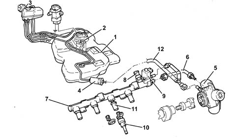
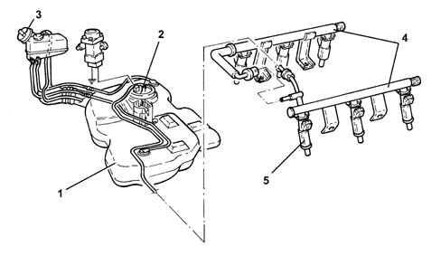
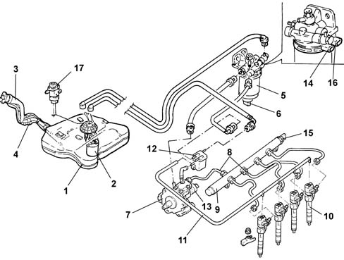

INTRODUCTION - FUEL TANK AND PIPES
- Path
- Descriptions > 10 ENGINE UNIT > 1040 FUEL TANK AND PIPES > INTRODUCTION - FUEL TANK AND PIPES
- Kind
- system description
- Applies to
- engines: 2.0 JTS, 3.2 V6, 1.9 JTD 16V; all production periods
- Interactive page
- https://sloeber94.github.io/elrnDB-aGt/en/#/125000271
Applies to: engines: 2.0 JTS; all production periods
CONSTRUCTION SPECIFICATIONS
The fuel system is divided into a low pressure circuit and a high pressure circuit.
The low pressure circuit consists of:
- submerged auxiliary pump complete with fuel level gauge, pressure regulator and fuel filter;
- external fuel filter;
The high pressure circuit consists of:
- pressure pump;
- high pressure pipe (to be replaced at every dismantling);
- distribution manifold (rail) with pressure regulator and fuel pressure sensor;
- injectors.
The pressure regulator integrated in the fuel pump assembly is set at 4.5 bar.
With the ignition ON the pressure throughout the low pressure line and the high pressure line is 4.5 bar and the pressure regulator is closed in these conditions.
The pressure in the distribution manifold (rail) is about 4.5 bar during starting because the high pressure pump is not capable of instantly providing high pressure.
When the engine has been started the fuel pressure in the rail is about 50 bar during idling.
The pressure in the rail can reach a maximum of 100 bar during operation depending on the engine load conditions and the performance requested by the driver.
When the engine is switched off, the pressure in the rail gradually decreases (vai the high pressure pump) until it reaches around 4.5 (pressure regulator setting).
The maximum pressure produced by the high pressure pump is around 120 bar (if the pressure regulator is stuck).
The system is equiped with an inertia switch that cuts off the fuel supply from the fuel pump if the vehicle crashes.
The fuel pipes are fastened to the underbody by means of special support bands with special protection.
FUEL SUPPLY SYSTEM

1 - Fuel tank
2 - Submerged fuel assembly complete with level gauge control
3 - Fuel filler pipe
4 - Additional fuel filter
5 - High pressure fuel pump
6 - High pressure pipe
7 - Distribution manifold
8 - Pressure sensor
9 - Pressure regulator
10 - Injectors
11 - Spacer
12 - Low pressure pipe
Applies to: engines: 3.2 V6; all production periods
CONSTRUCTION SPECIFICATIONS
The fuel supply system is the returnless type, i.e. with a single connecting pipe between the fuel tank and the engine.
This makes it possible to:
- minimize the possibility of the vehicle catching fire in case of an accident;
- reduce fuel vapour emissions to the atmosphere.
The fuel tank is located in front of the rear axle. It is made out of plastic with high mechanical strength.
The fuel pump is enclosed in the cradle that also incorporates:
- the fuel pressure regulator;
- the fuel level gauge;
- the fuel filter.
The system is equiped with an inertia switch that cuts off the fuel supply from the fuel pump if the vehicle crashes.
The fuel pipes are fastened to the underbody by means of special support bands with special protection.
FUEL SUPPLY SYSTEM

1 - Fuel tank
2 - Submerged fuel assembly complete with level gauge control
3 - Fuel filler pipe
4 - Fuel manifold pipe
5 - Injectors
Applies to: engines: 1.9 JTD 16V; all production periods
CONSTRUCTION SPECIFICATIONS
This fuel injection system uses an electronically controlled high injection pressure and a fuel supply method produced by one main injection and one or two pilot injections (depending on the engine operating conditions), electronically controlled by the injection control unit via the injector.
Pressure level is the basic parameter for optimising fuel consumption and exhaust fume levels.
The pilot injections make it possible to preheat the combustion chamber to avoid the pressure peak caused by rapid combustion and ensure smoother running.
Injection pressure regulation is made possible by the constructional features of the system, which is equipped with separate pressure pump and injectors, both managed by a control unit. In this way, injection pressure is independent of engine rotation speed.
The main features of the fuel feed system are as follows:
- high injection pressure (up to 1400 bar);
- injection pressure that can be modulated from 150 to 1400 bar under all engine operating conditions
- introduction of fuel up to 100 mm³/cycle within a speed range of 100 to 6000 rpm;
- precise injection control in terms of advance and duration;
- one or two pilot injections before TDC managed on the basis of rpm and engine load that allow the pressure in the combustion chamber to be distributed more evenly with a reduction in noise levels.
COMPOSITION
The fuel system is divided into a low pressure circuit and a high pressure circuit.
The low pressure circuit consists of:
- an auxiliary pump immersed in the tank;
- the fuel filter;
- the fuel return manifold pipe;
- the connecting pipes.
The high pressure circuit consists of:
- the pressure pump;
- the single fuel manifold pipe;
- the injectors;
- the connecting pipes.

1 - Fuel tank
2 - Submerged fuel assembly complete with level gauge control
3 - Fuel filler pipe
4 - Reflux pipe
5 - Fuel filter filter element
6 - Water in fuel filter sensor
7 - Pressure pump
8 - High pressure pipes
9 - Single fuel manifold pipe
10 - Injectors
11 - Pipe from injectors to fuel return manifold pipe
12 - Fuel return manifold pipe
13 - Pressure regulator
14 - Fuel temperature sensor
15 - Fuel pressure sensor
16 - Fuel heater
17 - Inertia switch